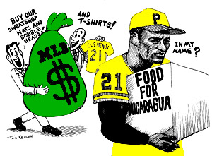

Anti Sweatshop Revelers Challenge MLB’s Assertions About Factories Sewing Officially Licensed Pirates & All Star Logo Apparel
Submitted on Tue, 06/20/2006 - 1:11pm
 For Immediate Release
For Immediate Release
June 18, 2006
Contacts: Celeste Taylor, Board of SweatFree Communities - 412.241-1339
Mongezi Nkomo, Director of Azania Heritage International - 412-361-4025
Tom Kertes, United Workers Association of Maryland - 410-522-1053
In an unsolicited letter to the Pittsburgh Anti Sweatshop Community Alliance dated April 24, 2006 Major League Baseball Vice President Ethan G. Orlinski said the following, “All of Major League Baseball Properties licensees are contractually obligated to comply with all applicable labor laws. To the extent that they are apprised of any infractions, they are expected to rectify them immediately. We are unaware of any such infractions.”
The Pittsburgh Anti Sweatshop Community Alliance is prepared to demonstrate that the conditions listed here are the norm, not the exception, in factories sewing MLBP’s officially licensed apparel.
- UNLAWFUL - POVERTY WAGES – far below subsistence levels, where ever they are
- UNLAWFUL - EXTREME FORCED overtime
- UNLAWFUL - UNSAFE WORKING CONDITIONS - factory fires and extreme repetitive motion injuries
- UNLAWFUL - MANDATORY pregnancy tests, firings for pregnancy, and other violations of women’s rights
- UNLAWFUL - FIRINGS and BLACKLISTS when workers try to organize unions
Major League Baseball Properties is amongst the largest licensers of copyrighted apparel in the world. Their contracts with labels and manufactures set the major league apparel industry standards. Their efforts to protect copyrights from counter fitters are more public and proactive than that of any other licenser.
The system of contracting and subcontracting amongst labels and manufactures is designed to obscure sweatshop labor conditions. If MLB showed the same concern for workers’ rights as they show for protecting their copyrights, Mr. Orlinsky would know that our Pirates and All Star logo apparel is being produced in sweatshops and these conditions would have already begun to improve.
Pittsburghers have been asked to identify with the Pirates and All Star logos. Everywhere in the world these logos are identified with our city, a city with high standards for workers rights. The Pittsburgh Anti Sweatshop Community Alliance is asking the Pirates to meaningfully represent this city’s high standards and ask that MLB adopt the “academic standard” already being implemented by nearly 200 colleges and universities with a similar system of licensing agreements. This academic standard includes full public disclosure of factory locations and wage disclosure.
In addition, members of the Pittsburgh Anti Sweatshop Community Alliance are using the Pirates and All Star logo as an organizing tool in the ongoing campaign to organize the global apparel industry. Workers in factories where the Pirates and All Star logos are sewn are encouraged to hear that their testimony will be represented at the 2006 All Star Game. Together we believe that this will provide them with some protection from the physical violence, firings and the black listing which is so often used to bust union organizing drives.
The complete letter from Ethan G Orlinsky is available here:
http://www.iww.org/files/OrlinskySweatshopsApril21_0.pdf
A letter from PASCA addressing our concerns to the Pittsburgh Pirates is here:
Baltimore’s ALL STAR Workers march for Freedom from Poverty
STAR Workers march for Freedom from Poverty
At Camden Yards June 23 - 24
Members of the Pittsburgh Anti Sweatshop Community Alliance are traveling to Camden Yards to march with members of the United Workers Association of Maryland at their Freedom From Poverty March on June 23 and 24. Camden Yards is the largest employer of day laborers in Baltimore. At the time these workers organized with the United Workers Association the contractor at Camden Yards was ARMARK. Workers were being fed out of garbage cans and, after fees for the temporary service were taken, they were being paid less than $5.00 and hour.
Since organizing the United Workers Association, workers at Camden Yards have won significant pay increases and ARMARK has been replaced with another contractor. The temporary service has been partially replaced with a worker cooperative. However, Peter Angelos promised ALL WORKERS at Camden Yards a living wage in 2004 and has failed to meet this standard. He is a promise breaker and a labor fake who will be made unwelcome in Pittsburgh during the 2006 All Star Game.
The United Workers Association is a Human Rights organization that recognizes the Human Rights an intrinsic dignity of every human being. Members of the UWA traveled to Minneapolis, Minnesota to participate with PASCA in a SweatFree Baseball Workshop at the 3rd Annual SweatFree Communities Conference in April and visited Freedom Corner and PNC Park on a visit to Pittsburgh in early June. UWA members will by joined by Pittsburghers when they confront Peter Angelos at the 2006 All Star Game.
Learn more about the United Workers Association, their Human Rights organizing model, and their struggle for everyone working at Camden Yards to make a living wage. www.unitedworkersassociation.org
ARAMARK supervises temporary workers who clean up PNC Park in Pittsburgh who are not represented by a labor union.
COMMUNITY EVENTS CALENDAR SUBMISSION:
PASCA invites all concerned Pittsburghers to help plan the All Star Anti-Sweatshop Carnival on Roberto Clemente Bridge. Come help to prepare a carnival that all 70,000 fans attending the 2006 All Star Game can participate in. Our meetings are on Tuesdays June 20th and June 27th at 7 PM. Both meetings will be held at the Friends Meeting House, 4836 Ellsworth Avenue in Shadyside. Everyone is welcome to come and learn about sweatshops and demand fair play in baseball. It’s all about the Best Major League Sweatshop Education in America and Pittsburgh’s high standards for workers rights. Through sports we express our values and demonstrate human potential. For more information, e-mail nosweatshopsbucco@yahoo.com.
The Pittsburgh Anti Sweatshop Community Alliance is an affiliate of SweatFree Communities